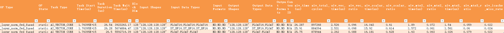
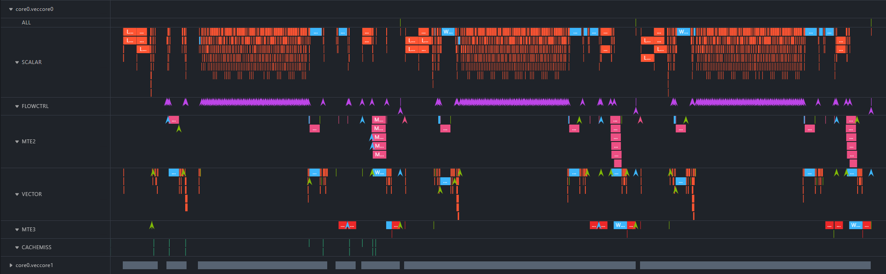

Triton-Ascend 性能分析方法
获取性能数据
在进行性能优化之前，需要获取准确的性能数据，了解性能现状，并根据性能现状分析下一步的优化方向。MindStudio提供了多种针对Triton算子性能测试方法，包括上板Profiling、单算子性能仿真流水图等手段。
上板Profiling
msProf工具用于采集和分析运行在昇腾AI处理器上算子的关键性能指标，用户可根据输出的性能数据，快速定位算子的软、硬件性能瓶颈，提升算子性能的分析效率。
注： msProf工具的使用依赖CANN包中的msopprof可执行文件，该文件中的接口功能和msprof op一致，该文件为CANN包自带，无需单独安装，msProf工具常用命令请参考msProf常用命令。
如下命令行使一个算子上板性能数据采集的示例，可以根据自身的需要灵活组合配置参数。实例中 --output为可选参数，用于指定收集到的性能数据的存放路径；--kernel-name为可选参数，用于指定需要收集的单个kernel的性能数据（若要采集全部算子的可不指定）；$HOME/projects/test_op.py为算子可执行脚本。
msprof op --kernel-name=target_kernel_name --output=$HOME/projects/output python3 $HOME/projects/test_op.py
以示范测试用例03-layer-norm.py为例(不指定--output时生成的数据文件保存在当前路径下)：
msprof op --kernel-name=_layer_norm_fwd_fused python3 03-layer-norm.py
注：以下所有采集项的结果数据含义可参考《CANN 性能调优工具用户指南》中的op_summary（算子详细信息）章节。 图1 PipeUtilization.csv（计算单元和搬运单元耗时占比）文件示例

算子仿真流水图
算子调优工具 msProf 支持仿真环境下的性能数据采集和自动解析。使用msProf工具获取仿真流水图的具体方式请参考指令流水图。
生成算子仿真流水图的命令与算子上板性能数据采集的命令类似。同样以上述03-layer-norm.py为例，--soc-version用于指定当前机器的硬件版本，可在终端中输入npu-smi info查看：
# source simulator路径
export LD_LIBRARY_PATH=/root/CANN/Install_CANN/Ascend/ascend_toolkit/latest/tools/simulator/{soc-version}/lib:$LD_LIBRARY_PATH
# 执行算子仿真流水图采集
msprof op simulator --kernel-name=_layer_norm_fwd_fused --soc-version={soc-version} python3 03-layer-norm.py
注：上述示例
soc-version=Ascend910B3
Soc-Version |
||
|---|---|---|
Ascend910A |
Ascend310 |
Ascend310B1 |
Ascend910B |
Ascend310P1 |
Ascend310B2 |
Ascend910B1 |
Ascend310P2 |
Ascend310B3 |
Ascend910B2 |
Ascend310P3 |
Ascend310B4 |
Ascend910B2C |
Ascend310P4 |
- |
Ascend910B3 |
Ascend310P5 |
- |
Ascend910B4 |
Ascend310P7 |
- |
以下两个文件中保存了获取的性能数据：
trace.json
visualize_data.bin
trace.json 支持以下两种可视化呈现方式：
Chrome浏览器
在Chrome浏览器中输入chrome://tracing地址，并将通过msprof op simulator 生成指令流水图文件（trace.json）拖到空白处打开，键盘上输入快捷键（W：放大；S：缩小；A：左移；D：右移）可进行查看。
图2 Chrome浏览器时间线界面

MindStudio Insight可视化呈现
MindStudio Insight工具以时序图方式为用户提供指令在昇腾AI处理器上的运行情况，用户可通过分析时序图中的指令详情、指令执行时间、指令关联代码的调用栈及指令/流水间同步连线等信息，识别微观指令的时序优化点。 图3 MindStudio Insight时间线界面

visualize_data.bin支持在Mind Studio Insight可视化呈现：
除了与trace.json一样可以采集到性能数据之外，visualize_data.bin还提供了与源代码（如：03-layer-norm.py）对应的指令关联看板。
图4 Mind Studio Insight-visualize_data.bin指令关联\注：以下采集项的结果数据含义可参考《MindStudio Insight 工具》的算子调优章节。

分析性能数据
理论参数
理论性能为算子实际性能的理想目标。不同的硬件平台的硬件规格各异，理论性能可以帮助我们了解硬件的潜能，从而设定性能优化的目标。
搬运相关流水（MTE1/MTE2/MTE3等）的理论耗时 = 搬运数据量（单位：Byte）/ 理论带宽。例如：某款AI处理器的GM峰值带宽约为1.8TB/s，想要进行一次float数据类型、4096 * 4096大小的矩阵搬运，搬运的理论耗时是
sizeof(float) * 4096 * 4096 / 1.8 TB/s = 37.28 us（按照1 TB = 1012 Byte来计算）。
说明:
搬运指令同时存在时，会存在共享带宽的情况，并不能每条都以接近理论带宽的速率搬运数据。比如，当MTE2/MTE3同时进行GM读写时，搬运流水线的耗时应该是（MTE2搬运量 + MTE3搬运量）/ GM带宽。
搬运不同大小的数据块时，对带宽的利用率（有效带宽/理论带宽）不一样。针对每次搬运数据量较小的情况，实测性能达不到理论带宽。
计算相关流水（Cube/Vector/Scalar等）的理论耗时 = 计算数据量（单位：Element） / 理论算力。例如：某款AI处理器对float数据类型的Vector理论峰值算力为11.06 TOPS，想要进行一次32K float类型的Element单指令计算，计算的理论耗时是32K / 11.06TOPS = 0.003us （按照1K =1000来计算）。
查找瓶颈
获取性能数据后，和理论数值差异较大的地方、耗时较长的流程被认为是“瓶颈点”。下文将介绍如何通过性能数据找到瓶颈点和对应的优化方向。
方法一：通过上板Profiling分析流水情况
查看上板Profiling解析后的op_summary_*.csv文件分析流水情况。注：“*”表示时间戳。
每条流水线的利用率理想情况下应为100%，没有达到100%的流水就可能有提升空间。上图示例中为某款AI处理器上获取的数据，可以看到Vector算子_layer_norm_fwd_fused的第一个场景中，Vector流水的利用率aiv_vec_ratio小于10%，判断未充分发挥算力；Scalar流水的利用率aiv_scalar_ratio已经在60%左右，判断Scalar是最长的流水。
当Scalar是最长的流水时：需要分析算子源码中是否对标量值进行复杂的运算，昇腾的SIMD微架构更适合多数据并行计算；另一种可能性是，由于一部分指令在硬件上不支持特定的数据类型，Triton软件栈将向量计算退化为标量计算。需要结合流水和标量优化手段进行优化，可参考方法三、查看仿真流水图，以及方法四、查看代码热点的情况进一步分析。
对于更一般的情况，例如MTE2搬运和实际的场景：三个输入矩阵的shape分别为(128,128)、(128,1)、(128,1)，数据类型为float16。当前算法为Two-pass方法，因此有三次X的搬入，以及W、B的各一次搬入，由此可以计算出总共需要搬运的数据量，继而通过理论参数中介绍的搬运流水理论耗时计算方法计算出理论值为sizeof(float16) * (128 * 128 * 3 + 128 + 128) / 1.8 TB/s ≈ 0.1991 us（按照1 TB = $10^{12}$ Byte来计算），与实际性能数据aiv_mte2_time存在比较大的差距。经分析，输入数据的总大小小于UB的空间（A2型号为192KB）。因此MTE2时间过长可能是Tiling计算得到的基本块太小，导致发射冗余的搬运指令。需要结合流水优化和Tiling优化手段进行优化。可参考方法三，查看仿真流水图，进一步分析各条流水的情况。方法二：通过上板Profiling分析Tiling情况
先前示例中使用的AI处理器，可以通过硬件平台查看到有48个Vector核，_layer_norm_fwd_fused算子是一个纯Vector算子，但是有些场景下发了过多的Block（Block Dim > 48），造成Host调度开销过大。那么下一步的主要优化方向为Tiling优化。方法三：通过仿真流水图分析流水情况

上图示例中为某款AI处理器仿真器上获取的数据，可以看到Vector核的SCALAR以及FLOWCTRL的指令饱和，可以结合算子逻辑分析，是否存在过多标量计算以及不支持的向量化操作。下一步的主要优化方向为标量计算优化。另一方面，可以看到Vector核的相关流水（veccore0的MTE2、VECTOR等）有规律性的断流现象，即大量无操作的空白段。可以结合算子逻辑分析，是否存在基本块切分过小等因素导致断流。主要优化方向为流水优化，其次结合Tiling优化和内存优化等手段进一步提升Vector流水利用率。方法四：通过代码热点分析情况

上图示例中为某款AI处理器仿真器上获取的数据，可以看到左侧load接口对应到右侧的一组汇编指令中（已筛选仅显示代码行相关指令，并按运行拍数降序排序），标量指令占比高，不符合load作为访存接口应该MTE占比高的情况。因此主要优化方向为标量计算。
示例：i64/i32 的compare在npu上无法启用vector导致向量计算转为标量计算
【描述】i64/i32 的cmp在npu上无法启用vector，退化为scalar计算效率降低；通过转化为fp32来利用vec_cast和vec_cmp实现vector操作加速。 【注意】在tl.load和tl.save中的mask使用cmp功能，大部分情况下编译器可以自动优化为vec操作，本例中tl.where则需要手动转换。
import triton
import triton.language as tl
@triton.jit
def npu_vector_cmp_kernel(
X, # [Tensor] input tensor (row x col)
Out, # [Tensor] output tensor (row x col)
Mean, # [Vector] mean tensor (row, ) of X
Rstd, # [Vector] std tensor (row, ) of X
stride_x_row, # [Scalar] stride of row in X
stride_out_row, # [Scalar] stride of row in Out, normally equals to stride_x_row
M, # [Scalar] row number
N, # [Scalar] col number
eps, # [Scalar] epsilon to aviod division by zeros
BLOCK_M: tl.constexpr,
BLOCK_N: tl.constexpr
):
"""
an example of layernorm to checkout Vector Cmp
Out = ((X - E[X]) / sqrt(V[X] + eps)) on dim -1
just for easy case, we assume that:
1. BLOCK_N >= X.shape(-1), group_n = 0 only
2. BLOCK_M = 1, group_m = range(0, row, 1)
"""
group_m = tl.program_id(0)
group_n = tl.program_id(1)
row = group_m
# calculate index & offset
Mean = Mean + group_n * M
Rstd = Rstd + group_n * M
X = X + row * stride_x_row + group_n * N
Out = Out + row * stride_out_row + group_n * N
cols = tl.arange(0, BLOCK_N) # cols is int64
x = tl.load(X + cols, mask=cols < N, other=0.0).to(tl.float32)
# calculate mean & rstd
mean = tl.sum(x, axis=0) / N
tl.store(Mean + row, mean)
- xbar = tl.where(cols < N, x - mean, 0.0) # N为标量值
+ # change cols(i64) into cols_cmp(f32) to enable vector processing
+ cols_cmp = cols.to(tl.float32)
+ xbar = tl.where(cols_cmp < N, x - mean, 0.0)
var = tl.sum(xbar * xbar, axis=0) / N
rstd = 1 / tl.sqrt(var + eps)
tl.store(Rstd + row, rstd)
# calculate Out
mask = cols < N
out = (x - mean) * rstd
tl.store(Out + cols, out, mask=mask)
示例图 优化前后数据对比图
 通过分析图中的数据可以发现，优化前后的aiv_scalar_time(us)和aiv_scalar_ratio差距较大，说明性能差的原因是有很多scalar运算，
通过采集算子仿真流水图可以得到visualize_data.bin，再用MindStudio Insight解析visualize_data.bin，可以发现xbar = tl.where(cols < N, x - mean, 0.0)有很多scalar运算，通过上面优化可以减少scalar运算。
通过分析图中的数据可以发现，优化前后的aiv_scalar_time(us)和aiv_scalar_ratio差距较大，说明性能差的原因是有很多scalar运算，
通过采集算子仿真流水图可以得到visualize_data.bin，再用MindStudio Insight解析visualize_data.bin，可以发现xbar = tl.where(cols < N, x - mean, 0.0)有很多scalar运算，通过上面优化可以减少scalar运算。